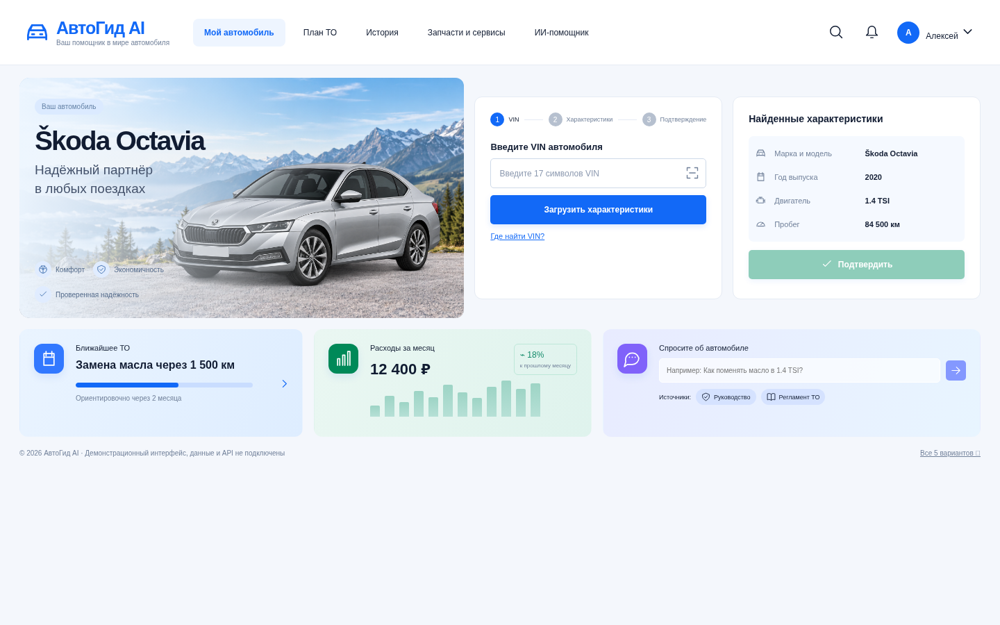
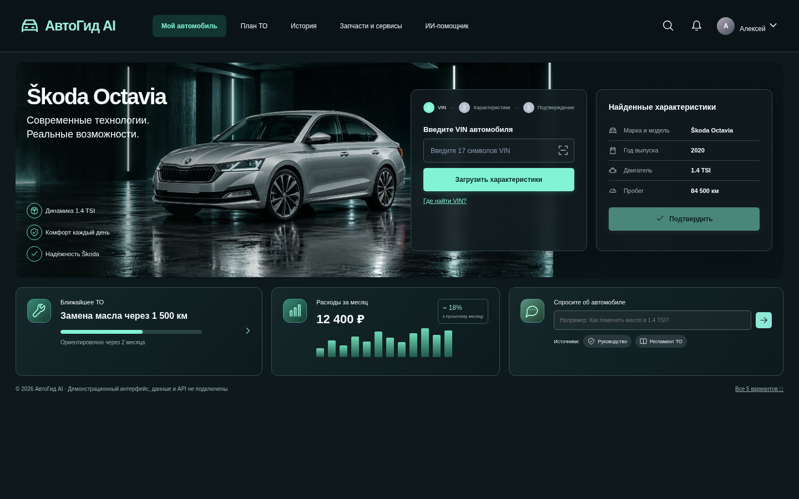
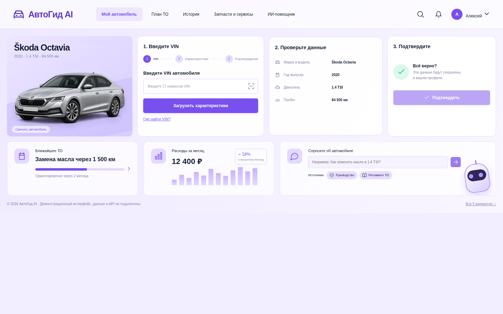
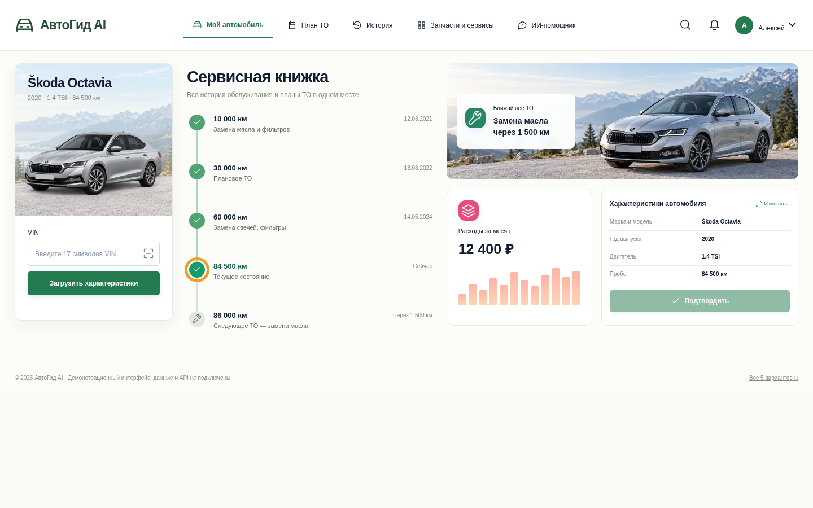
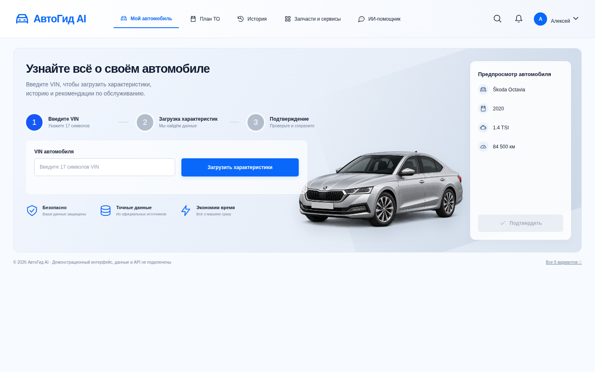

Ваш автомобиль.
Пять взглядов на интерфейс.
Самостоятельные веб-страницы по выбранным концепциям 1, 2, 5, 7 и 9.
Откройте любой вариант и попробуйте форму VIN, навигацию и подтверждение данных.

01. Светлый минимализм
Светлая панель с горным пейзажем, формой VIN и тремя нижними карточками.
Открыть веб-страницу ↗
02. Тёмный гараж
Тёмный гараж, мятные акценты, полупрозрачные панели и реалистичный автомобиль.
Открыть веб-страницу ↗
05. Карточки
Лавандовая сетка: автомобиль, ввод VIN, проверка и подтверждение в отдельных карточках.
Открыть веб-страницу ↗
07. Сервисная книжка
Сервисная книжка с историей обслуживания, карточкой автомобиля и планом ТО.
Открыть веб-страницу ↗
09. Сканер VIN
Крупный экран добавления автомобиля: три шага, форма VIN и предпросмотр.
Открыть веб-страницу ↗Для проверки формы используйте VIN TMB12345678901234 — будет показана демонстрационная Škoda Octavia.